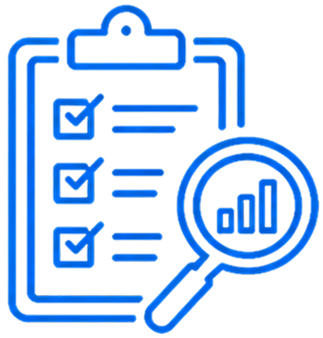
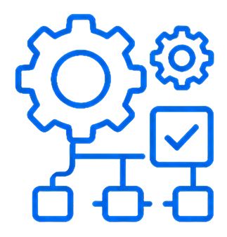

QUALITY WITHOUT STANDARDS
IS IMPOSSIBLE
TO SCALE.
EconBrain helps organizations establish quality frameworks, governance systems, and operational standards that improve consistency, strengthen compliance, and support sustainable organizational excellence.
Begin the Conversation →MOST QUALITY FAILURES BEGIN LONG BEFORE THEY ARE DETECTED.
Quality challenges rarely originate at the point where problems become visible. They emerge from inconsistent processes, weak governance structures, unclear standards, and the absence of measurable control systems that ensure organizational consistency.
EconBrain supports organizations in building institutional quality systems that improve performance, strengthen accountability, reduce operational risk, and establish sustainable standards capable of supporting long-term growth and stakeholder confidence.
QUALITY
CHALLENGES.
Achieving operational excellence requires more than compliance. Organizations must build quality systems that are embedded throughout governance structures, operational processes, and performance management frameworks.

Quality Framework Assessment
We evaluate existing quality systems, operational procedures, governance structures, and control mechanisms to identify weaknesses that limit consistency, efficiency, and organizational performance.

Standards Implementation
EconBrain develops structured quality frameworks aligned with recognized standards, helping organizations establish repeatable processes, measurable controls, and sustainable operational discipline.
Compliance & Governance
We design governance mechanisms that ensure standards are maintained, compliance risks are managed, and quality performance remains aligned with strategic and regulatory requirements.

QUALITY
THAT BUILDS
TRUST.
Quality is not a department. It is an organizational capability. EconBrain engagements focus on building systems that improve consistency, strengthen stakeholder confidence, and support sustainable operational excellence.
- Operational Consistency
- Improved Compliance Performance
- Reduced Operational Risk
- Institutional Accountability
- Long-Term Organizational Resilience

WHAT WE
DELIVER.
Our advisory services help organizations move from fragmented quality practices to integrated standards systems capable of supporting operational excellence across the enterprise.
- Quality Management Frameworks
- Standards Development & Alignment
- Compliance Readiness Assessments
- Operational Process Reviews
- Governance & Control Systems
- Continuous Improvement Programs
Frequently Asked Questions
QUALITY & STANDARDS,
ANSWERED.